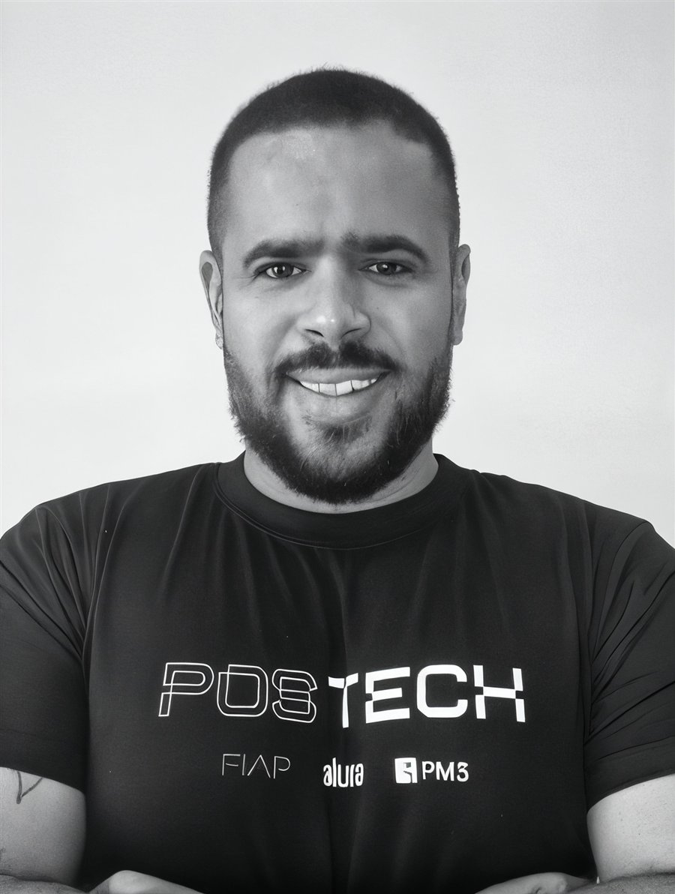
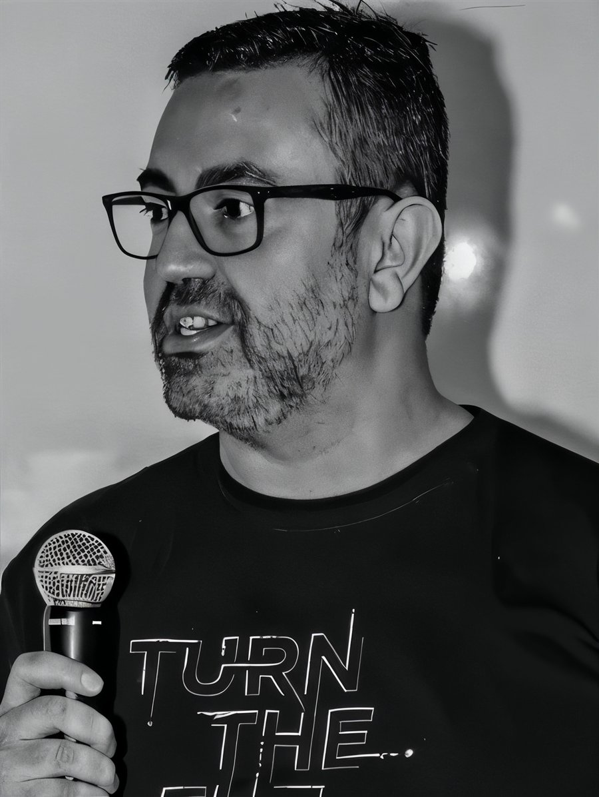
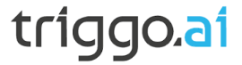

A cada fase concluída, uma nova certificação.
Méritos que comprovam sua evolução e as novas competências antes mesmo de concluir o curso, o que pode gerar boas oportunidades profissionais.
- 1Fase 1
- 2Fase 2
- 3Fase 3
- 4Fase 4
- 5Fase 5
- ★Especialista
Três pós-graduações 100% digitais criadas pela PM3 com a FIAP: 10 meses, projeto real do primeiro ao último dia e certificado reconhecido pelo MEC.
Alunos e ex-alunos FIAP, Alura e PM3: 18x R$ 580
01 Pós-graduações
Três especializações com a mesma estrutura e o mesmo padrão FIAP. Escolha pelo momento da sua carreira.
Desenvolva estratégias para gerenciar todas as fases do ciclo de vida de um produto digital, da concepção ao go-to-market.
Desenvolva uma visão integrada de negócios e entenda como a IA pode potencializar sua gestão e performance.
Uma jornada completa para impulsionar sua carreira como Tech Lead, gerando mais valor para os negócios.
02 Na sua carreira
Certificações a cada fase, um portfólio real, uma comunidade que acompanha você e o selo de quem tem nota máxima no MEC.
Méritos que comprovam sua evolução e as novas competências antes mesmo de concluir o curso, o que pode gerar boas oportunidades profissionais.
Você nunca estará sozinho: professores acompanham todos os momentos do curso pela comunidade no Discord, com aula inaugural, grupos de estudos e hackathons.
Um projeto real em 5 fases, com desafios cada vez mais complexos para desenvolver autonomia e montar o seu próprio portfólio de projetos.
Pós-graduação lato sensu emitida pela FIAP.

A Pós Tech nasce de um ecossistema que já impactou mais de 6 milhões de pessoas e treinou mais de 3.000 empresas em IA.


04 Complemente seu currículo
Ao concluir a Pós Tech, você pode complementar a formação com programas de instituições parceiras em Lisboa, Boston, Coimbra e Porto, nas áreas de liderança, empreendedorismo e inteligência artificial.
O programa de liderança da melhor escola de Economia, Finanças e Gestão de Portugal.
Um dos mais respeitados programas de empreendedorismo do mundo.
Uma nova liderança, associando neurociência, biomimética e inovação.
Para estar sempre à frente das transformações impulsionadas pela IA.
05 Coordenação
Coordenação da FIAP e professores que lideram produto, dados e tecnologia em empresas como Oracle e Portobello Shop. Conheça a equipe da pós de Digital Product Management.




06 Dúvidas
Fale com o time da Pós Tech pelo WhatsApp ou pelo e-mail contato@pm3.com.br.
Falar no WhatsAppSim. A Pós Tech é uma pós-graduação da FIAP, criada com a PM3, com certificado reconhecido pelo MEC.
Pessoas com formação superior completa realizada no Brasil, com colação de grau em curso tecnólogo, bacharelado ou licenciatura. Cursos de formação específica ou sequenciais não habilitam para o ingresso.
10 meses e 360 horas de conteúdo, com encontros ao vivo com os professores.
Aulas 100% digitais, assíncronas e hands-on, com lives opcionais e suporte no Discord. Ao final, há uma única atividade individual presencial, agendada por você em uma unidade ou polo da FIAP (São Paulo, Rio, Porto Alegre, Belo Horizonte ou Recife).
Sim. Alunos e ex-alunos da PM3, da FIAP e da Alura têm 20% de desconto: 18x de R$ 580. Basta usar na matrícula o mesmo e-mail da plataforma PM3; o desconto aparece automaticamente.
Não há TCC. A avaliação é feita pelo Tech Challenge (uma entrega ao final de cada fase), pelo Hackathon Experience e por uma atividade individual presencial no fim do curso. O certificado é emitido pela FIAP, Centro Universitário com nota máxima no MEC.
As formações são cursos livres, no seu ritmo, e fazem parte da Membership. A Pós Tech é uma pós-graduação de 10 meses com certificado reconhecido pelo MEC, turmas e projeto em 5 fases. Tem matrícula e valor próprios e não está incluída na Membership.
07 Certificação
Ao concluir, você recebe o certificado de pós-graduação lato sensu da FIAP, reconhecido pelo MEC, e um portfólio com o projeto que desenvolveu nos 10 meses.
20% de desconto para alunos e ex-alunos. O desconto entra automático na matrícula.
Inscreva-se como alumniColaboradores de empresas parceiras da FIAP também têm 20% de desconto.
PM3 para empresas